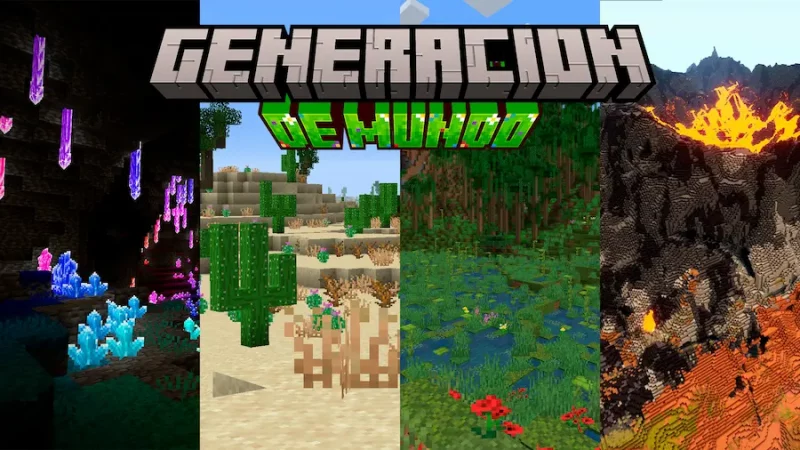
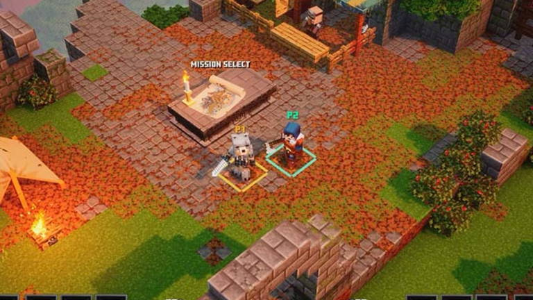

Que es Minecraft?
Minecraft es un videojuego de construcción de tipo «mundo abierto» o en inglés sandbox creado originalmente por el sueco Markus Persson (conocido comúnmente como «Notch»), que creó posteriormente Mojang Studios (actualmente parte de Microsoft).1920 Está programado en el lenguaje de programación Java21 para la versión Java Edition y posteriormente desarrollado en C++ para la versión de Bedrock Edition.22 Fue lanzado el 17 de mayo de 2009, y después de numerosos cambios, su primera versión estable «1.0» fue publicada el 18 de noviembre de 2011.
Markus Persson, el creador de Minecraft. Un mes antes del lanzamiento de su versión completa se estrenó una versión para dispositivos móviles llamada Minecraft: Pocket Edition en Android,23 y el 17 de noviembre del mismo año fue lanzada la misma versión para iOS, aunque posteriormente esta pasaría a ser Minecraft: Bedrock Edition.2425 El 9 de mayo de 2012 fue lanzada la versión del juego para Xbox 360 y PS3. Todas las versiones de Minecraft reciben actualizaciones constantes desde su lanzamiento. En octubre de 2014, Minecraft lanzó su edición para PlayStation Vita,26 desarrollada por Mojang y 4J Studios. Esta versión presenta las mismas actualizaciones y similares características que las otras versiones de consola; además, cuenta con el sistema de venta cruzada, es decir que al comprar la versión de PlayStation 3 se obtiene también la de PlayStation Vita. A marzo de 2024 se habían vendido más de 300 millones de copias, siendo actualmente el videojuego más vendido de la historia
El 15 de septiembre de 2014, fue adquirido por la empresa Microsoft por un valor de 2500 millones de dólares estadounidenses. Este suceso provocó el alejamiento de Markus Persson de la compañía.28 En noviembre de 2016, Microsoft anunció el lanzamiento de la versión completa de Minecraft: Education Edition.
Jugabilidad
Minecraft es un juego de mundo abierto, y no tiene un fin claramente definido (aunque sí que tiene una dimensión llamada a sí misma 'The End', o en español 'El Final' en donde después de entrar y matar a la dragona aparecen los créditos del juego y un poema).31 Esto permite una gran libertad en cuanto a la elección de su forma de jugar. A pesar de ello, el juego posee un sistema que otorga logros por completar ciertas acciones.3233 La cámara es en primera persona, aunque los jugadores tienen la posibilidad de cambiarla a una perspectiva de tercera persona en cualquier momento.
Minecraft es un juego de mundo abierto, y no tiene un fin claramente definido (aunque sí que tiene una dimensión llamada a sí misma 'The End', o en español 'El Final' en donde después de entrar y matar a la dragona aparecen los créditos del juego y un poema).31 Esto permite una gran libertad en cuanto a la elección de su forma de jugar. A pesar de ello, el juego posee un sistema que otorga logros por completar ciertas acciones.3233 La cámara es en primera persona, aunque los jugadores tienen la posibilidad de cambiarla a una perspectiva de tercera persona en cualquier momento.
El juego se centra en la colocación y destrucción de bloques, siendo que este se compone de objetos tridimensionales cúbicos, colocados sobre un patrón de rejilla fija. Estos cubos o bloques representan principalmente distintos elementos de la naturaleza, como tierra, piedra, minerales, troncos, entre otros.
Los jugadores son libres de desplazarse por su entorno y modificarlo mediante la creación, recolección y transporte de los bloques que componen al juego, los cuales solo pueden ser colocados respetando la rejilla fija del juego.3536 Los jugadores son capaces de crear además las denominadas «granjas», que son estructuras y mecanismos para conseguir un fin, aprovechándose de ciertas mecánicas del juego. En ciertos casos, algunas de ellas se terminan implementando al juego, como el observador.37 En el juego se pueden encontrar estructuras especiales como aldeas, galerías mineras, templos marinos, pirámides y templos selváticos.

Inicio
Al inicio del juego, el jugador se encuentra en un mundo generado de manera procedural mediante varios algoritmos, como el ruido Perlin, el ruido rosa entre otros38, lo que permite que este sea inmenso, teniendo hasta 30 millones de bloques en todas las direcciones en las versiones actuales.3940 Además de ser inmensamente grande, también hay una gran cantidad de diferentes mundos (diferentes versiones de los algoritmos mencionados) siendo así prácticamente imposible encontrarse dos mundos iguales, a no ser que en las opciones del mundo se le introduzca una "semilla" (seed en inglés), la cual es el código que identifica cada mundo.41 El jugador es libre de desplazarse por el terreno, conformado por distintos biomas, entre los que se encuentran desiertos, sabanas, selvas, océanos, llanuras, tundras, etcétera.394243 El juego posee su propio ciclo de tiempo de día y noche, siendo que un día en el juego equivale a 20 minutos en la realidad.

Mundo
El mundo no se genera por completo al principio, sino que está dividido en chunks («trozos», «pedazos» traducido literalmente al español, pero sin adaptación oficial) de 16 × 16 bloques en horizontal y en las versiones actuales de 384 bloques en vertical.44 Los chunks cercanos al jugador se cargan en la memoria, pudiendo elegir la distancia mínima a la que se cargan.
A medida que este se desplaza, se generan y añaden nuevos chunks al mundo.
Dificultad
Independientemente de los varios modos de juego también se puede definir la dificultad del juego, siendo el modo más tranquilo el pacífico, que a diferencia de las demás dificultades, no permite que aparezcan monstruos en el juego que puedan herir al jugador.
Modos de Juego
Supervivencia
El modo supervivencia (survival en inglés) se basa en la vida real combinada con un poco de fantasía y se trata de la supervivencia al ataque de las múltiples criaturas que surgen en la oscuridad o de noche.47 El máximo aguante que tienen los personajes consta de 10 corazones (20 puntos de salud). En este modo las herramientas, armas y armadura se gastan con el uso.
Creativo
En el modo creativo (creative en inglés) se centra enteramente en el aspecto de la construcción libre. Los jugadores poseen un suministro ilimitado de todos los bloques y objetos del juego,48 que pueden colocar y destruir de forma instantánea. Además, no son atacados por los monstruos, son inmunes a todo daño (aunque sí pueden morir cayendo al vacío si están en Java Edition, o mediante el comando /kill) y pueden volar libremente por el mapa. En este modo no se pueden romper bloques sosteniendo espada, para prevenir la destrucción del entorno cuando el jugador golpea o ataca.Extremo
El modo extremo (hardcore en inglés) es idéntico al modo supervivencia, con la diferencia de que tras la muerte del jugador este ya no puede volver a revivir y la dificultad está fijada en difícil.
Espectador
El modo espectador permite a los jugadores volar a través de bloques y ver el mundo sin interactuar con él. En este modo, la barra de acceso rápido se convierte en un menú que permite al jugador teletransportarse a los jugadores en la partida. También es posible ver desde el punto de vista de otro jugador o criatura.Aventura
El modo aventura (adventure en inglés) está destinado a los jugadores que se dedican a crear mapas para usuarios que deseen jugar en línea o solos. Este modo de juego se basa en los siguientes criterios que afectan al jugador en distintos sentidos
El jugador solo puede romper un bloque si tiene la herramienta adecuada, y esta programada con comandos para que pueda ser rota. Si el creador del mapa así lo configura, la dificultad no puede ser modificada por los jugadores.
Multijugador
El modo multijugador en Minecraft permite que varios jugadores interactúen y se comuniquen entre sí en un solo mundo. Está disponible a través de multijugador directo de juego a juego, juego LAN, pantalla dividida local (solo consola) y servidores (alojados por jugadores y negocios).52 Los jugadores pueden ejecutar sus propios servidores, usar un proveedor de alojamiento o conectarse directamente al juego de otro jugador a través de Xbox Live. Los mundos de un solo jugador tienen soporte de red de área local, lo que permite a los jugadores unirse a un mundo en computadoras interconectadas localmente sin una configuración de servidor.53 Los servidores multijugador de Minecraft están guiados por operadores de servidores, que tienen acceso a los comandos del servidor, como configurar la hora del día y teletransportar a los jugadores. Los operadores también pueden establecer restricciones con respecto a qué nombres de usuario o direcciones IP pueden o no ingresar al servidor.52 Los servidores multijugador tienen una amplia gama de actividades, y algunos servidores tienen sus propias reglas y costumbres únicas. El servidor más grande y popular es Hypixel, que ha sido visitado por más de 14 millones de jugadores únicos.5455 El combate jugador contra jugador (PvP) se puede habilitar para permitir la lucha entre jugadores.56 Muchos servidores tienen complementos personalizados que permiten acciones que normalmente no son posibles.

ENTRADAS RELACIONADAS

BattleCats
The Battle Cats es un videojuego de defensa de torres gratuito desarrollado y publicado por....
Last updated 3 mins ago

Warcraft III
Warcraft III: Reign of Chaos es un videojuego de estrategia en tiempo real creado por Blizzard Entertainment y es....
Last updated 10 mins ago

Half-Life
Half-Life (estilizado HλLF-LIFE) es un videojuego de disparos en primera persona del género ciencia ficción, con toques de techno-thriller, desarrollado por....
Last updated 10 mins ago